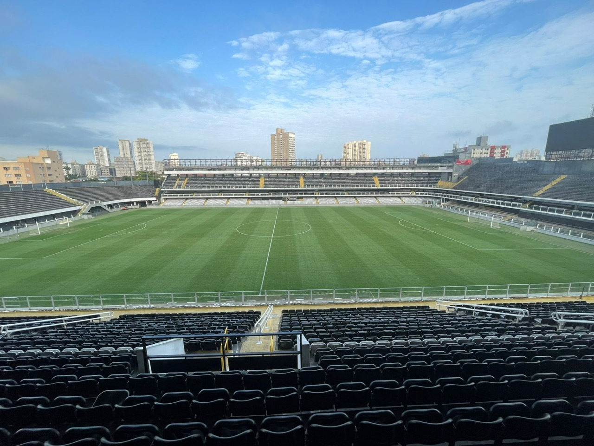
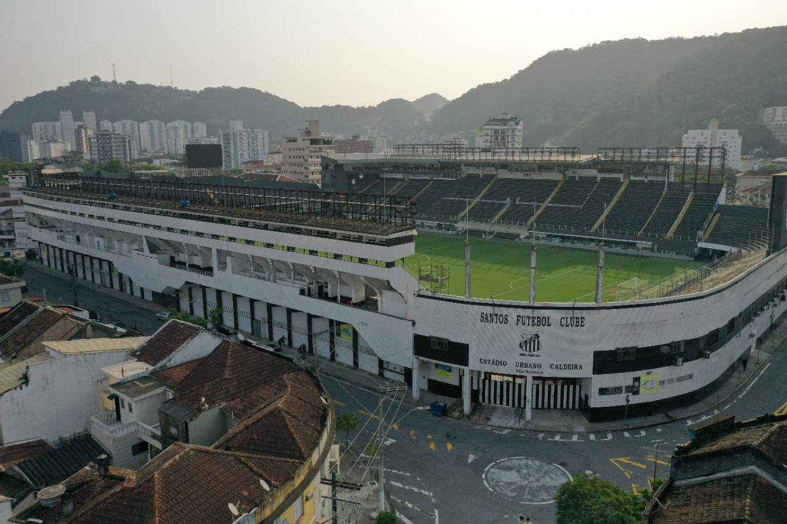
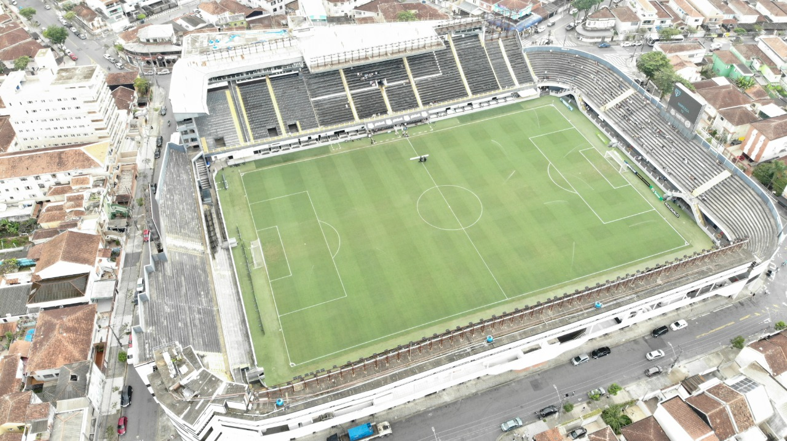

Vila Belmiro
No dia 12 de outubro de 1916, uma quinta-feira, dia de Nossa Senhora Aparecida, o Santos inaugurava sua pioneira Praça de Esportes, localizada no bairro de Vila Belmiro, antiga Vila Operária.
Antes da inauguração da sua Praça de Esportes na Vila Belmiro, o Santos treinava e realizava até algumas partidas em seu campo na rua Aguiar de Andrade, atual Manoel Tourinho, entre as ruas Lowndes e Emílio Ribas, no Macuco, mas sem as dimensões e acomodações necessárias, a questão do campo passou a caráter de urgência.
A primeira manifestação formal da necessidade de construção de um campo foi feita pelo presidente Agnello Cícero de Oliveira que, em reunião de diretoria no dia 14 de julho de 1915, expôs a “necessidade urgente da construção de um campo de football com todas as acomodações e instalações que se fazem precisar aos nossos jogadores e aos nossos apreciadores”. Para tratar de um assunto dessa magnitude, o presidente nomeou e solicitou a cooperação de uma comissão de sócios, que ficou responsável pela tarefa.

No início, a opção mais atraente era um terreno examinado por Urbano Caldeira em boas condições de edificar o campo esportivo, localizado no Campo Grande. Porém, em reunião de 14 de abril de 1916, coincidentemente o 4º aniversário do clube, Luiz Suplicy Junior comunicou à diretoria que a Companhia Construtora de Santos propunha fornecer um campo completo, vendendo-o em prestações mensais.
Em assunto de tamanha importância como a aquisição de um patrimônio dessa relevância para os destinos do clube, todos os aspectos foram discutidos. A proposta da Companhia Santista de Habitações Econômicas e respectivo exame da planta do terreno se mostrou a mais viável.
Portanto, em 10 de junho, o presidente fechou as negociações para compra de terreno com a Companhia Santista de Habitações Econômicas. A minuta foi lida e registrada em Ata no dia 23 de junho de 1916.
A Inauguração
O campo do Santos, já não era sem tempo, estava prestes a ser inaugurado. Em reunião de diretoria de 11 de outubro, foi lido um ofício da Associação Paulista de Sports Athléticos (APSA), “nomeando comissão que examinará o ground deste club”. A mesma, em comum acordo com o clube, concordou com a transferência do jogo Ypiranga x Santos que deveria realizar-se no dia 12 para o dia 22 próximo.
No dia festivo aconteceram várias partidas e brincadeiras entre os associados. Foi o adeus aos jogos nos campos situados nas avenidas Ana Costa e Conselheiro Nébias. Apenas o campo alugado pelo clube em 1912, na Vila Macuco, continuou sendo usado para os jogos da liga interna do clube até 1917.
Em 12 de outubro, o Santos inaugurava a sua Praça de Esportes.

Urbano Caldeira e Vila Belmiro
Quando o estádio santista foi fundado era chamado apenas de “Campo do Santos”, ou “Praça de Esportes do Santos”. Com o passar dos anos, o nome do bairro virou também o apelido do estádio. Em 24 de março de 1933, após o falecimento de Urbano Caldeira, o campo passou a se chamar, oficialmente, Estádio Urbano Caldeira. A sugestão foi feita por Ricardo Pinto de Oliveira em homenagem ao maior abnegado da história santista.
Em que pese o nome oficial, o estádio do Alvinegro é mais conhecido por Vila Belmiro. Com o passar dos anos recebeu ainda as denominações populares de “Alçapão da Vila” e “Vila mais famosa do mundo”.
O Alçapão
O famoso apelido de “Alçapão” – imortalizado na marchinha “Leão do Mar” – composta por Maugeri Neto e Maugeri Sobinho para comemorar o título paulista de 1955, foi criado bem antes, em 1930, pelo jornalista Antonio Guenaga, do jornal A Tribuna. Naquele ano o Santos permaneceu invicto em 25 partidas jogadas em seu estádio.
O Rei Pelé é o maior artilheiro do estádio santista com 288 gols, seguido por Feitiço com 162 e Pepe com 152.
